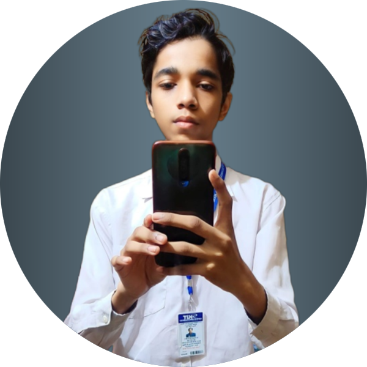

Hello, I'm
Samarth Patel
Frontend Developer


Hello, I'm
Frontend Developer
Get to know more


2+ years
Frontend Development

Bachelors of Technology
Computer Science
I am currently a sophomore at Kanpur Institute of Technology, pursuing an undergraduate degree. I am majoring in Computer Science and Engineering. I am interested in problem solving, Competitive Programming, AI and ML and learning new Programming languages and seeking the opportunities related to the same .I am also looking forward to AI Development in upcoming years. I am also an Open-Source enthusiast. Learning about new thing gives me a broader perspective and curiousity. I am curious about different things and enjoy learning. I like to solve problems and fix errors. It helps me to expand my knowledge and logic building. Solving problems with my own logic with efficiency motivates me to learn it in deep and use it to solve real world problems. I am a goal-oriented person and do my tasks with productivity and efficiency.